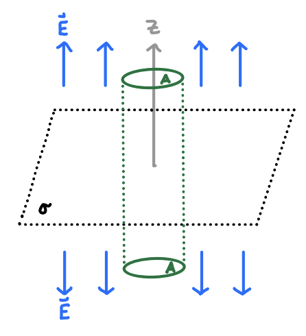
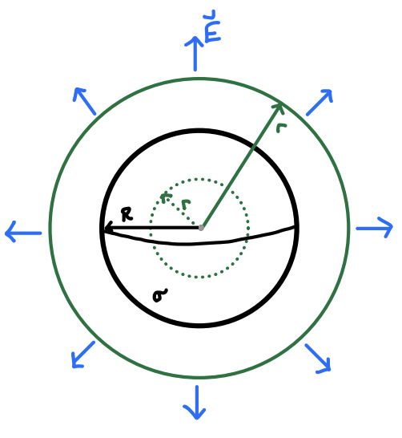
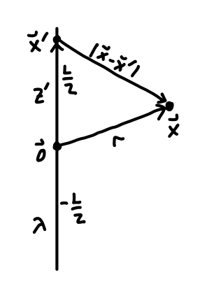

Electrostatics
As is custom in electromagnetism, we’ll begin our study of the subject by focusing on the simple case of electrostatics. Electrostatics is the behavior of static distributions of charges and the forces they exert on other charged objects. Historically the subject was developed to study macroscopic phenomena. For this reason, certain abstractions we’ll make in the subject should be viewed as idealizations that are convenient for the study of macroscopic phenomena, but fail to have any real meaning at the microscopic level, where quantum mechanical descriptions are needed.
Coulomb’s Law
We can start the subject in any number of ways, for example by just stating Maxwell’s equations and studying their implications. We’ll instead stick to the more usual convention, where we start by assuming the force laws of classical mechanics along with some empirical facts about electric charges and the forces between them.
We’ll assume that forces are vectors, meaning they have magnitude and direction. Being vectors, forces obey the principle of superposition, meaning the combined effect of two forces exerted on a body is given by their vector sum.
In the 18th century, it was discovered that aside from mass, every physical body has associated to it another scalar quantity called electric charge, which can take on any real value, positive, negative, or zero. From these facts and other experiments, Coulomb discovered that the force between two static, charged bodies satisfies the following properties:
- The force between the two charges depends linearly on the magnitude of each charge. The larger the magnitude, the stronger the force between them.
- The force obeys an inverse square law nature similar to gravity. That is, the strength of the force between the two charges varies with the inverse square of the distance between them.
- As with gravity, the force is directed along the line of force joining the two charges.
- The force is attractive if the two bodies have charges of opposite sign, and repulsive if the two bodies have charges of the same sign. If either body has zero charge there is no force between them.
Coulomb’s Law
Putting all of these properties together we get Coulomb’s Law. Suppose we have two point particles with charges \(q_1\) and \(q_2\) located at positions \(\mathbf{x}_1\) and \(\mathbf{x}_2\) respectively. Then according to Coulomb’s Law, the force charge \(q_1\) experiences due to charge \(q_2\) is given by \[ \mathbf{F}_{12} = k_e \frac{q_1 q_2}{|\mathbf{x}_1 - \mathbf{x}_2|^2} \mathbf{e}_{12} \ . \] Here \(\mathbf{e}_{12}\) is the unit vector pointing from \(q_2\) to \(q_1\). By Newton’s third law, the force \(q_2\) experiences due to \(q_1\) is equal and opposite, with \(\mathbf{F}_{21} = -\mathbf{F}_{12}\). Since this force depends only on the distance between the two point charges it’s a central force, which implies that energy is conserved in electrostatics. We’ll say more about elecrostatic energy later.
The proportionality constant \(k_e\) has value and dimensions that depend on the choice of units used. In this course we’ll mostly use the Gaussian system of units, where \(k_e \equiv 1\) and the mechanical units are measured in CGS units. This means force is measured in dynes and distance in centimeters. Evidently then, in the Gaussian system of units charge must have units of \(\sqrt{\text{dyne} \cdot \text{cm}^2}\). We give this unit of charge a name, called the electrostatic unit or esu, where \(1 \ \text{esu} \approx 3.3 \cdot 10^{-10} \ \text{C}\) in SI units. In Gaussian units, Coulomb’s Law thus simplifies to \[ \mathbf{F}_{12} = \frac{q_1 q_2}{|\mathbf{x}_1 - \mathbf{x}_2|^2} \mathbf{e}_{12} \ . \] Note that as defined Coulomb’s Law really only holds for point charges. That is, for point particles where all charge is localized at a single point. This is of course an abstraction. In reality we deal with larger bodies where the charge may be distributed across the body in some way. We’ll see how to modify Coulomb’s Law the work with more arbitrary distributions of charge below.
What is Charge?
Before moving on, it’s worth stopping to ask what exactly it is we mean when we say a body has charge. Mathematically, we can think of charge similar to how we think of mass. It’s a scalar quantity associated with a body, except unlike mass it can take on any real value, positive or negative. More fundamentally though, the charge of a body is really an aggregate of charge due to more atomic particles inside the body like electrons and protons.
A body is really a collection of atoms held together in some way, each with some number of protons and electrons. What we think of as charge is really how the electrons and protons are distributed inside the body. Electrons and protons carry the same charge but with opposite sign. In practice most bodies are at least approximately charge neutral, meaning it contains the same number of protons and electrons. If there are more electrons than protons the body has negative charge. If there are fewer electrons than protons the body has positive charge.
In practice, it’s the movement of electrons that control how a material is charged. In some materials, called conductors these electrons move freely around the material, while for materials, called insulators, these electrons stay locked into their respective atoms and only move inside their confined electron clouds. In either case, if the body is charged it implies some deficit or surplus of electrons.
One would think that we should think of charge in terms of electrons and define charge in units of the number of surplus electrons present in the body. However, atomic structure wasn’t known at the time the theory of electromagnetism was first formulated. It was only known that there was a scalar quantity called charge associated to the body, with no understanding of what gives rise to it. It’s for these largely historical reasons that we continue to think of positive charge as moving around inside a body, even though it’s really negatively charged electrons that move around.
Coulomb vs Gravity
Given that Coulomb’s Law looks so similar to Newton’s law of gravitation, it’s fair to ask how the forces compare to each other. Let’s suppose we have two particles separated by a distance \(r\) with masses \(m_1, m_2\) and charges \(q_1, q_2\) respectively. Since the particles have both mass and charge they’ll feel both a gravitational force \(\mathbf{F}_g\) and a Coulomb force \(\mathbf{F}_e\). We can get an idea of the relative strengths of these two forces by looking at their ratio. In Gaussian units, this is given by \[ \frac{|\mathbf{F}_e|}{|\mathbf{F}_g|} = \frac{q_1 q_2}{r} \bigg / G \frac{m_1 m_2}{r} = \frac{q_1 q_2}{G m_1 m_2} \ . \] To get a feel for these values let’s pick a representative particle, the electrons. Then we’d have masses \(m_1 = m_2 = m_e\) and charges \(q_1 = q_2 = e\). In Gaussian units, these values are \[ \ G \approx 6.7 \cdot 10^{-8} \ , \ m_e \approx 9 \cdot 10^{-28} \ , \ e \approx -5 \cdot 10^{-10} \ . \] Plugging these numbers in, we get \[ \frac{|\mathbf{F}_e|}{|\mathbf{F}_g|} = \frac{e^2}{G m_e^2} \approx 4 \cdot 10^{42} \ . \] That is, for two electrons the Coulomb force is 42 orders of magnitude stronger than the gravitational force. The difference between the two forces is so stark we can practically speaking neglect the effects of gravity when studying the interactions between electrons, or indeed any small particles. Indeed, this is one reason why in quantum mechanics we rarely consider gravity. On the other hand, larger objects like people, planets, or galaxies tend to be electrically neutral or very close to it. This means in those cases gravity is all there is, and for large masses gravity can obviously be quite substantial.
Electric Fields
While we could proceed to study this force between charges just as we did in with gravity in classical mechanics, we’ll find it’s useful in electromagnetism to make a further abstraction, the field abstraction. The reason for this is that we want to think of all interactions as local. That is, a particle should only feel the presence of things near by, not things far away. If we think in terms of forces we have to give locality up, since two charges will feel a force no matter how far away they are, so-called “action at a distance”.
Electric Field
Instead what we’ll do is imagine that particles interact due to the presence of background fields, and think of these fields as giving rise to forces. Suppose we have a charge \(q'\) sitting in space at some position \(\mathbf{x}'\). Suppose we then place an infinitesimal test charge \(q\) at some other position \(\mathbf{x}\). By Coulomb’s Law, the test charge will feel a force \(\mathbf{F}\) due to \(q'\). We’ll define a vector-valued function of position known as the electric field by the ratio \[ \mathbf{E}(\mathbf{x}) \equiv \frac{\mathbf{F}}{q} \ . \] Empirically this ratio is found to be well-defined and independent of the value of \(q\) so long as \(q\) is infinitesimal, with \[ \mathbf{E}(\mathbf{x}) = \frac{q'}{|\mathbf{x} - \mathbf{x}'|^2} \mathbf{e}_\xi \ . \] Here for convenience we define the separation vector \(\boldsymbol{\xi} \equiv \mathbf{x} - \mathbf{x}'\), so that the field always points from the location \(\mathbf{x}'\) of the source charge \(q'\) to the field point \(\mathbf{x}\) where we imagine placing the test charge \(q\). The relationship between all these points is shown in the figure below.
Notice that the electric field doesn’t depend on \(q\) at all. It has a value at every point in space. When a test charge \(q\) is brought in and placed at a position \(\mathbf{x}\) it feels a force \[ \boxed{ \mathbf{F} = q \mathbf{E}(\mathbf{x}) } \ . \] Note that the requirement that \(q\) be an infinitesimal charge in this definition is important. If test charge is high enough, it will distort the background electric field through its presence, in effect making both charges source charges for the field. Also, note that this doesn’t mean that the charge will move in the direction of the electric field. All that will be true is that its force vector will be tangential to the electric field at that point, pointing in the direction of the field if \(q\) is negative, and opposite the field if \(q\) is opposite. The path the charge actually follows through the field may be quite complicated.
We’ll often find it more useful to express the electric field formula in a slightly different way by getting rid of the unit vector. Using the fact that the separation vector can be written \(\boldsymbol{\xi} = |\mathbf{x}-\mathbf{x}'| \mathbf{e}_\xi\) we can write the same electric field in the equivalent form \[ \mathbf{E}(\mathbf{x}) = q' \frac{\mathbf{x}-\mathbf{x}'}{|\mathbf{x}-\mathbf{x}'|^3} \ . \] This only defines the electric field due to a single point charge \(q'\). What if instead we have multiple source charges spread out in space. Suppose we instead have \(N\) point source charges \(q_1, q_2, \cdots, q_N\) located at positions \(\mathbf{x}_1, \mathbf{x}_2, \cdots, \mathbf{x}_N\) respectively. Since forces obey the principle of superposition, we know we can add the force due to each source charge to get the total force, \[ \mathbf{F} = \mathbf{F}_1 + \mathbf{F}_2 + \cdots + \mathbf{F}_N \ . \] Since the electric field is proportional to the force it must evidently obey the superposition principle as well. Then the combined electric field due to the presence of all of these charges must be given by the sum of each individual field, \[ \mathbf{E}(\mathbf{x}) = \sum_{i=1}^N \mathbf{E}_i(\mathbf{x}) = \sum_{i=1}^N q_i \frac{\mathbf{x}-\mathbf{x}_i}{|\mathbf{x}-\mathbf{x}_i|^3} \ . \] Again, the combined electric field does not depend on the test charge, only the source charges. If we imagine placing an infinitesimal test charge \(q\) at \(\mathbf{x}\) it will still feel the combined force \(\mathbf{F} = q \mathbf{E}\).
The most typical way to visualize vector fields in electromagnetism is via field lines. We imagine that any positive charge emits from it a bunch of lines, called field lines. These field lines follow the direction of the vector field in space, only terminating at negative charges or at infinity. Field lines should never cross each other. The direction of a field line is always from positive charges to negative charges. The strength of the field is captured by the density of field lines. The more field lines there are surrounding a given point in space, the stronger the field at that point. Indeed, we can informally define a vector field as the flux density of field lines, i.e. the number of field lines per unit volume.
Here are some examples of electric field line sketches for a few different configurations of point charges. Notice it’s usually fairly easy to sketch field lines for a given charge configuration, even if finding an expression for the actual electric field of that configuration might be difficult. We’ll see field lines sketched in many figures throughout this course.
FIGURE
Let’s now work a problem involving finding the electric field for a very simple example, the simple dipole.
Example: Simple dipole
Suppose we have two like charges of opposite sign separated by a fixed distance along some axis. More formally, suppose we have a positive charge \(+q\) located at a point \(\mathbf{x}_+ = \frac{d}{2} \mathbf{e}_z\), and a negative charge \(-q\) located at the opposite point \(\mathbf{x}_- = -\frac{d}{2} \mathbf{e}_z\). Our goal will be to find the electric field for any field point \(\mathbf{x}\) in the \(xy\)-plane.

By the superposition principle, the electric field is given by \[ \mathbf{E} = \mathbf{E}_+ + \mathbf{E}_- = q\frac{\mathbf{x} - \mathbf{x}_+}{|\mathbf{x} - \mathbf{x}_+|^3} - q\frac{\mathbf{x} - \mathbf{x}_-}{|\mathbf{x} - \mathbf{x}_-|^3} \ . \] To proceed further we first need to find the separation vectors for each charge. We have \[ \mathbf{x} - \mathbf{x}_\pm = r \mathbf{e}_r \mp \frac{d}{2} \mathbf{e}_z \ , \] Plugging this in and simplifying, we get \[ \begin{align*} \mathbf{E} &= q \frac{r \mathbf{e}_r - \frac{d}{2} \mathbf{e}_z}{|r \mathbf{e}_r - \frac{d}{2} \mathbf{e}_z|^3} - q \frac{r \mathbf{e}_r + \frac{d}{2} \mathbf{e}_z}{|r \mathbf{e}_r + \frac{d}{2} \mathbf{e}_z|^3} \\ &= q \frac{r \mathbf{e}_r - \frac{d}{2} \mathbf{e}_z}{\bigg[r^2 + \big(\frac{d}{2}\big)^2\bigg]^{3/2}} - q \frac{r \mathbf{e}_r + \frac{d}{2} \mathbf{e}_z}{\bigg[r^2 + \big(-\frac{d}{2}\big)^2\bigg]^{3/2}} \\ &= \frac{-qd}{\bigg[r^2 + \big(\frac{d}{2}\big)^2\bigg]^{3/2}} \mathbf{e}_z \ . \end{align*} \] We can immediately see that the electric field for any point in the \(xy\)-plane must point along the negative \(z\)-axis. This can be understood intuitively just by vector subtracting the separation vectors in the figure above and noting that the magnitude of the field for each charge must be the same by symmetry.
This is as far as we can go as is, but we can make one useful simplification. Let’s suppose \(r \gg d\). This is the far field limit where the field point is far away from both charges. In this limit we can ignore the \(\frac{d}{2}\) term in the denominator and write \[ \mathbf{E} \approx -\frac{qd}{r^3} \mathbf{e}_z \ . \] This result tells us something interesting. Even far away from the source charges, the dipole doesn’t seem to follow Coulomb’s Law since the field doesn’t fall off as \(\mathbf{E} \sim \frac{1}{r^2}\), but rather as \(\mathbf{E} \sim \frac{1}{r^3}\). The reason for this is the two charges screen each other, canceling out the monopole field that would usually give rise to a \(\frac{1}{r^2}\) term in the field. This causes the field to be weaker than we’d expect for a point charge in the far field limit.
The term \(qd \mathbf{e}_z\) has a name. It’s called the dipole moment, denoted by the vector \(\mathbf{p}\). The dipole moment is a vector of magnitude \(qd\) that points from the negative to the positive charge in a dipole. Using the dipole moment it’s possible to show that for a general field point, not just in the \(xy\)-plane, we can express the electric field of a dipole in the far field limit as \[ \mathbf{E} = \frac{3(\mathbf{p} \cdot \mathbf{e}_r) \mathbf{e}_r}{r^3} - \frac{\mathbf{p}}{r^3} \ . \] Notice the first term is just the projection of the dipole onto the field point direction, which is zero when the two vectors are perpendicular. The dipole turns out to be very important to the theory of electrostatics. We’ll talk about it in more detail in the next chapter when we discuss the multipole expansion.
Continuous Charge Distributions
In classical electromagnetism we rarely find ourselves dealing with point charges. We’re generally dealing with macroscopic materials containing many charged particles packed densely together. In such cases it’s more convenient to treat those charges not as a sum over all the point charges, but instead as a continuous charge distribution.
A charge distribution can be thought of as a large number of charged point particles packed densely together. Provided the charges are dense enough that we can treat them as continuous, we can define a charge density \(\rho(\mathbf{x}')\) by \[ dq = d^3 \mathbf{x}' \ \rho(\mathbf{x}') \ . \] Each \(dq\) will give rise to an infinitesimal electric field \(d\mathbf{E}\) defined by Coulomb’s Law. Using the principle of superposition, we can then integrate over all these charges over all space to get the electric field of the distribution, \[ \boxed{ \mathbf{E}(\mathbf{x}) = \int d^3 \mathbf{x}' \ \rho(\mathbf{x}') \frac{\mathbf{x}-\mathbf{x}'}{|\mathbf{x}-\mathbf{x}'|^3} }\ . \] Strictly speaking we should only integrate over the volume \(\mathcal{V}\) of the distribution, but since we can freely define the density to be zero outside the distribution we’ll usually omit this from the formula and assume we’re integrating over all space.
This idea can be seen in the figure below. Here the gray blob is some charge distribution, and \(dq\) some infinitesimal element of it. Adding up, or integrating, over all these charges will give the full electric field \(\mathbf{E}(\mathbf{x})\).
The field lines for the electric fields of continuous distributions work the same way they do for point charges. The main new thing to be aware of is that field lines will always point normal to the surface of the charge distribution. Again, the field lines will point away from positive charge distributions, and toward negative charge distributions or out to infinity, never crossing.
We’ll often be interested in charge distributions of lower dimension as well, for example lines of charge and sheets of charge. For this reason it’s useful to define charge densities in these dimensions as well. The simplest case is the point charge, which we can think of as a zero-dimensional density. If \(q'\) is some point charge located at \(\mathbf{x}'\), we can use the delta function to write \[ dq = d^3 \mathbf{x} \ q \delta(\mathbf{x} - \mathbf{x}') \ . \] Indeed, we get \[ \mathbf{E}(\mathbf{x}) = \int d^3 \mathbf{x}'' \ q \delta(\mathbf{x}'' - \mathbf{x}') \frac{\mathbf{x}-\mathbf{x}''}{|\mathbf{x}-\mathbf{x}''|^3} = q \frac{\mathbf{x}-\mathbf{x}'}{|\mathbf{x}-\mathbf{x}'|^3} \ , \] which agrees with our original formula for the electric field of a point charge.
Stepping up to one-dimension, we can imagine a line of charge in space, for example a long, thin charged wire. If \(d\ell'\) is an infinitesimal line element of this line of charge, we can define a line charge density \(\lambda(\mathbf{x}')\) by the formula \[ dq = d\ell' \ \lambda(\mathbf{x}') \ . \] Then the formula for the electric field becomes \[ \mathbf{E}(\mathbf{x}) = \int d\ell' \ \lambda(\mathbf{x}') \frac{\mathbf{x}-\mathbf{x}'}{|\mathbf{x}-\mathbf{x}'|^3} \ . \] Here it’s again understood that we’re integrating over the line of charge \(\mathcal{C}\), but we’ll again usually omit this dependency.
Last, we can imagine a two-dimensional surface of charge in space, for example a thin sheet of charge. If \(da'\) is the area element along this surface of charge, we can define a surface charge density \(\sigma(\mathbf{x}')\) by the formula \[ dq = d\mathcal{a}' \ \sigma(\mathbf{x}') \ . \] Then the formula for the electric field becomes \[ \mathbf{E}(\mathbf{x}) = \int da' \ \sigma(\mathbf{x}') \frac{\mathbf{x}-\mathbf{x}'}{|\mathbf{x}-\mathbf{x}'|^3} \ . \] Again, it’s understood we’re integrating over the whole surface of charge \(\mathcal{S}\), which we will usually omit.
We could in principle define charge densities in higher dimensions as well, though we won’t since we won’t need them. Each of the cases we discussed can be visualized using the figure below.
Example: Sphere with uniform charge
As a useful example of how to calculate the electric field of a charge distribution, let’s consider the case of a uniformly charged sphere. We’ll first suppose the sphere is hollow with a radius \(R\) and a uniform charge \(Q = 4\pi R^2 \sigma\) where \(\sigma\) is a constant surface density.
Given the symmetry of the problem it’s natural to work in spherical coordinates. By symmetry, it’s not hard to see that the electric field for the hollow sphere must always point in the radial direction. To see why, notice that any source point we pick on the sphere will have an opposite point \(180^\circ\) away at the same altitude. Since the charge is uniform both source points will cancel all but the radial component of the field when added together. We thus just need to find the single scalar \(E(r)\), where \[ \mathbf{E}(\mathbf{x}) = E(r) \mathbf{e}_r \ . \] To find \(E(r)\) we need to take the inner product of \(\mathbf{E}\) with \(\mathbf{e}_r\). In terms of the separation vector \(\boldsymbol{\xi} = \mathbf{x} - \mathbf{x}'\), we have \[ E(r) = \int da' \ \frac{\sigma}{\xi^3} \boldsymbol{\xi} \cdot \mathbf{e}_r \ . \] To make headway we need to find the area element \(da'\), the relative distance \(\xi = |\boldsymbol{\xi}|\), and the dot product \(\boldsymbol{\xi} \cdot \mathbf{e}_r\). Starting with the area element, for a sphere it’s simply the volume element in spherical coordinates with \(r=R\) and without the \(dr\) integral, \[ da' = R^2 \sin\theta' d\theta' d\phi' \ . \] Now we need to find \(\xi \equiv |\mathbf{x} - \mathbf{x}'|\), which is somewhat trickier. Without loss of generality we can assume that the field point lies on the \(z\)-axis, so that \(\mathbf{x} = r \mathbf{e}_z\). Then an arbitrary source point \(\mathbf{x}' = R \mathbf{e}_r\) on the sphere will subtend a polar angle \(\theta'\) with the \(z\)-axis. Using the law of cosines on the triangle shown in the figure below, we can see that \[ \xi^2 = r^2 + R^2 - 2Rr \cos\theta' \ . \]
Next we need to calculate the dot product \(\boldsymbol{\xi} \cdot \mathbf{e}_r\). Using the geometric formula for the dot product and the above triangle, we see \[ \boldsymbol{\xi} \cdot \mathbf{e}_r = \xi \cos\alpha = \frac{r - R\cos\theta'}{\xi} \ . \] We can now plug all of these values into the electric field integral and just plug away. We’ll integrate over the whole sphere, \[ \begin{align*} E(r) &= \int da' \ \frac{\sigma}{\xi^3} \boldsymbol{\xi} \cdot \mathbf{e}_r \\ &= \int \sigma R^2 \sin\theta' d\phi' d\theta' \frac{r - R\cos\theta'}{\xi^3} \\ &= R^2 \sigma \int_0^{2\pi} \sin\theta' d\phi' \int_0^{\pi} d\theta' \frac{r - R\cos\theta'}{(r^2 + R^2 - 2Rr \cos\theta')^{3/2}} \\ &= 2\pi R^2 \sigma \int_0^{\pi} \sin\theta' d\theta' \frac{r - R\cos\theta'}{(r^2 + R^2 - 2Rr \cos\theta')^{3/2}} \ . \end{align*} \] To evaluate the remaining integral we make use of a very common substitution in electrostatics. Supposing \(f(\cos\theta)\) is some function we’d like to integrate in spherical coordinates, we can always let \(\mu = \cos\theta'\) and \(d\mu = -\sin\theta' d\theta'\). Then we have \[ \int_0^\pi \sin\theta d\theta \ f(\cos\theta) = \int_{-1}^1 d\mu \ f(\mu) \ . \] Using this useful trick, the integral for the field simplifies slightly to \[ E(r) = 2\pi R^2 \sigma \int_{-1}^1 d\mu \ \frac{r - R\mu}{(r^2 + R^2 - 2Rr \mu)^{3/2}} \ . \] The remaining integral can be done by breaking up the numerator and doing another substitution. In the end we get $$ \[\begin{align*} E(r) &= \frac{2\pi R^2 \sigma}{r^2} \bigg[\frac{r\mu - R}{\sqrt{r^2 + R^2 - 2R\mu}} \bigg]_{\mu=-1}^1 \\ &= \frac{2\pi R^2 \sigma}{r^2} \bigg[\frac{r-R}{|r-R|} + 1 \bigg] \ . \end{align*}\] $$ Now, notice that the first term in the brackets will always be \(\pm 1\) depending on the sign of \(r-R\). When we’re inside the sphere \(r < R\), and so this term is \(-1\). This means that inside the sphere the electric field must vanish, with \(E(r) = 0\).
Outside the sphere \(r > R\), and so the first term is \(+1\). In this case we have \[ E(r) = \frac{4\pi R^2 \sigma}{r^2} = \frac{Q}{r^2} \ . \] Notice that this looks identical to Coulomb’s Law for the electric field. Evidently, a hollow sphere behaves as a point charge \(Q\) for any field points outside the sphere.
Using the result we have for the hollow sphere, let’s quickly figure out what the electric field should be for a solid sphere of uniform charge. The only difference now is that the sphere is 3-dimensional. We can work directly from our previous solution. We just have to replace \(\sigma\) with \(\rho\) and \(R\) by an integration variable \(r'\). However we do have to be slightly careful, since the charge density is only nonzero inside the sphere. This means we integrate up to \(R\) for field points outside the sphere, and up to \(r\) otherwise. We can take care of both cases by integrating up to \(r_{\min} \equiv \min(r, R)\). Then we have \[ E(r) = \frac{4\pi\rho}{r^2} \int_0^{r_{\min}} dr' \ r'^2 = \frac{4\pi\rho}{3} \frac{r_{\min}^3}{r^2} \ . \] Now, if \(r > R\) we’re outside the sphere, and \(r_{\min} = R\). In that case we have \[ E(r) = \frac{4\pi R^3 \rho}{3r^2} = \frac{Q}{r^2} \ . \] Here we used the fact that in 3 dimensions the total charge of the sphere becomes \(Q = \frac{4\pi}{3} R^3 \rho\). Notice that we get the same result we got in the hollow sphere. The electric field is again that of a point charge outside the sphere.
Inside the sphere, however, things change. When \(r \leq R\) we have \(r_{\min} = r\), in which case \[ E(r) = \frac{4\pi\rho}{3} r = \frac{Qr}{R^3} \ . \] Now the electric field inside the sphere is apparently linear in \(r\), not zero. It’s easy to check that the two results match at the boundary of the sphere where \(r=R\). Note that in either case the electric field is still just the enclosed charge \(Q_{\text{enc}} = \frac{4\pi}{3} r_{\min}^3 \rho\) divided by \(r^2\). This means any charge outside the enclosed sphere contributes nothing to the field. In the figure below we plot the field strengths \(E(r)\) for both the hollow and solid spheres to show the difference between the two.
FIGURE
This was clearly a difficult integration problem. We’ll see a much easier way to find the electric field of a sphere shortly. For now, just be aware that in practice calculating the electric field of a charge distribution straight from the definition is almost always very challenging, and often impossible. Indeed, much of the rest of our study of electrostatics from here on will be about finding simpler ways to calculate the electric field of an arbitrary charge distribution.
Gauss’s Law
While Coulomb’s Law is perhaps more directly connected to experiment and the historical progression of electromagnetism, it’s usually not the most illuminating nor useful way to understand and calculate electric fields. Just as in classical mechanics we found it useful to express Newton’s law as an ordinary differential equation for the trajectory of a particle, in electromagnetism we’ll find it more useful to express Coulomb’s Law as a set of partial differential equations for the electric field.
Flux
We know from the Helmholtz theorem that any well behaving vector field can be fully characterized by its divergence and its curl. This means if we can find the divergence and curl of the electric field we have an equivalent characterization for the field in terms of two linear partial differential equations. We’ll derive the divergence of the electric field in this section, saving the curl of the electric field for the next section before discovering a neat way to combine them both together.
To make a start we need to define the idea of the flux of a vector field. Suppose \(\mathcal{S}\) is some surface of interest we’d like to calculate the flux through. In electromagnetism we call this surface a Gaussian surface. The flux \(\Phi\) through \(\mathcal{S}\) due to the field \(\mathbf{E}\) is defined by the integral \[ \Phi \equiv \int_\mathcal{S} \mathbf{E} \cdot d\mathbf{a} \ . \] Note when we need to specify which field we’re calculating the flux of, we’ll write \(\Phi_\mathbf{E}\) to be more specific.
Informally, we can think of the flux as the total number of signed field lines passing through some specified surface of interest. By signed, we mean that the field lines passing through the positively oriented side of the surface contribute positive flux, while those passing through the negatively oriented side of the surface contribute negative flux. This means that flux itself will be a signed quantity indicating the net tendency of a field to flow into or out of a given surface. In particular, this means if the same field line passes in and out of the same surface it contributes nothing to the flux.
FIGURE
As defined, the flux depends entirely on the surface \(\mathcal{S}\) we choose. Different surfaces will have a different flux. However, in practice we’ll usually be interested in closed surfaces. In that case, we’ll show that the flux depends only on the charge distribution enclosed by the surface, not on the geometric properties of the surface itself. To do that we need to find a way to relate the flux of an electric field to the charge distribution in some way.
Integral Form of Gauss’s Law
Let’s start by trying to find the flux through a sphere of radius \(r\) centered on a point charge \(q\) located at the origin. Since \(q\) is located at the origin we have \(\mathbf{x}' = \mathbf{0}\), meaning the electric field is simply \[ \mathbf{E}(\mathbf{x}) = q \frac{\mathbf{x}}{|\mathbf{x}|^3} = \frac{q}{r^2} \mathbf{e}_r \ . \] For a sphere of radius \(r\) the area element is given by \(d\mathbf{a} = r^2 d\Omega \mathbf{e}_r\). Here \(d\Omega\) is the differential solid angle, which is just a useful shorthand for angular components of the area element, \(d\Omega \equiv \sin\theta d\theta d\phi\). To find the flux, we need only now integrate to get \[ \Phi = \oint_\mathcal{S} \mathbf{E} \cdot d\mathbf{a} = \int d\Omega \ r^2 \frac{q}{r^2} \mathbf{e}_r \cdot \mathbf{e}_r = 4\pi q \ . \] We’ve thus shown that the flux of a point charge through a sphere is just proportional to the charge. Notice in this result that the radius of the Gaussian surface didn’t enter into the picture at all. No matter what it cancels out. This fact is unique to inverse square fields, like electricity or gravity. Any field of this type will have the property that its flux is proportional to its source “charge”.
But thus far we’ve only shown this holds for the flux through a sphere. What about an arbitrary closed surface? In fact the result is the same. To see why, suppose \(\mathcal{S}\) is some arbitrary closed surface containing \(q\). Suppose \(\alpha\) is the outward angle between \(\mathbf{E}\) and the surface normal \(\mathbf{n}\). Then we evidently have \[ \mathbf{E} \cdot d\mathbf{a} = |\mathbf{E}| |\mathbf{n}| \cos\alpha da = \frac{q}{r^2} \cos\alpha da \ . \] It now seems like we should get a different flux. However, we have to look closer at the area element \(da\) first. Since the surface is no longer spherical we have to divide by another factor of \(\cos\alpha\) to account for the fact that we’re only interested in the flux through the outward normal component of the surface, \[ da = \frac{r^2}{\cos\alpha} d\Omega \ . \] Putting these together we get exactly what we claimed, \[ \oint_\mathcal{S} \mathbf{E} \cdot d\mathbf{a} = \int d\Omega \ \frac{r^2}{\cos\alpha} \frac{q}{r^2} \cos\alpha = 4\pi q \ . \] This is only true though when the charge is contained inside the surface. What if it’s outside the surface? We already said informally the flux in that case should be zero, since any field lines going into the surface also comes out, offsetting the flux. Indeed, if \(\mathbf{E} \cdot d\mathbf{a}\) is some contribution to the flux, there will be a corresponding contribution \(-\mathbf{E} \cdot d\mathbf{a}\) on some other part of the Gaussian surface that will cancel out the first contribution. This can be seen geometrically in the figure below.
Putting these two results together, we’ve shown that if \(q\) is a point charge and \(\mathcal{S}\) is some closed surface, then \[ \oint_\mathcal{S} \mathbf{E} \cdot d\mathbf{a} = \begin{cases} 4\pi q, & q \ \text{inside} \ \mathcal{S} \\ 0, & q \ \text{outside} \ \mathcal{S} \ . \end{cases} \] By the principle of superposition, this result must also hold for some arbitrary distribution of charge, the flux through a closed surface depends only on the charge \(Q_{\text{enc}}\) enclosed inside the surface, \[ \boxed{ \oint_\mathcal{S} \mathbf{E} \cdot d\mathbf{a} = 4\pi Q_{\text{enc}} } \ . \] This important result is called the integral form of Gauss’s Law. It says that the total flux of the electric field through a closed surface is proportional to the enclosed charge inside the surface.
Differential Form of Gauss’s Law
The enclosed charge can be found by integrating the charge density over the volume \(\mathcal{V}\) of the closed surface, \[ Q_{\text{enc}} = \int_\mathcal{V} d^3\mathbf{x} \ \rho(\mathbf{x}) \ . \] Indeed, if we plug this into Gauss’s Law we get \[ \oint_\mathcal{S} \mathbf{E} \cdot d\mathbf{a} = 4\pi \int_\mathcal{V} d^3\mathbf{x} \ \rho(\mathbf{x}) \ . \] Also, notice we can use of the divergence theorem to convert the flux integral into a volume integral, \[ \oint_\mathcal{S} \mathbf{E} \cdot d\mathbf{a} = \int_\mathcal{V} d^3\mathbf{x} \ \nabla \cdot \mathbf{E} \ . \] Putting the two integrals together and moving everything to one side, we have \[ \int_\mathcal{V} d^3\mathbf{x} \ \big[\nabla \cdot \mathbf{E} - 4\pi\rho\big] = 0 \ . \] Since this integral must vanish for any valid integrand we must have \[ \boxed{ \nabla \cdot \mathbf{E} = 4\pi\rho } \ . \] This result is known as the differential form of Gauss’s Law. It’s the main thing we sought to derive in this section. It gives us an expression for the divergence of the electric field in terms of the source charge distribution.
Examples
Gauss’s Law can sometimes be very convenient to directly find the electric field in situations where the charge distribution has a high level of symmetry. As we’ve shown, as long as two closed surfaces contain the same charge distribution they will also have the same flux. What we can thus do is use this freedom to choose a Gaussian surface that simplifies the problem. The simplest thing we could imagine doing is to choose a Gaussian surface such that \(|\mathbf{E}|\) is constant along the surface. In that case, we’d have \[ \oint_\mathcal{S} \mathbf{E} \cdot d\mathbf{a} = |\mathbf{E}| A \ , \] where \(A\) is the total surface area of \(\mathcal{S}\). Then the integral form of Gauss’s Law simplifies greatly to \[ |\mathbf{E}| = \frac{4\pi Q_{\text{enc}}}{A} \ . \] For this to work though the charge distribution really needs to have a high level of symmetry. There are essentially three situations where we can do this: for infinite lines of charge, infinite sheets of charged, and charged spheres. Let’s look at each.
Example: Infinite line of Uniform Charge
Consider a line of charge of infinite length and infinitesimal width, so we can treat the line as one-dimensional. We’ll suppose the line is oriented along the \(z\)-axis and carries a constant charge per unit length of \(\lambda\). Our goal is to find its electric field. We could do this the hard way as before, but in this case we can do it much more easily using Gauss’s Law, so that’s what we’ll do.
By symmetry, the electric field should depend only on the cylindrical radius \(\varrho\). To see why, pick a random field point in the \(xy\)-plane. Now pick a random source point at a height \(z'\) along the wire. Then there must also be an opposite source point at a height \(-z'\). If we add the two field vectors together, their \(z\)-components will cancel, leaving only a contribution in the \(\varrho\)-direction. We thus must conclude that the electric field has the property that \[ \mathbf{E}(\mathbf{x}) = E(\varrho) \mathbf{e}_\varrho \ . \] All that remains thus is to find \(E(\varrho)\). Now, the electric field must be constant along cylinders of constant \(\varrho\). This means we have a natural Gaussian surface on which to apply Gauss’s Law. We’ll choose cylinders of radius \(\varrho\) and length \(z\) centered on the wire. Since only the sides of the cylinder contribute to the flux, we need only consider the area of the sides of the cylinder, ignoring the two caps. This means the flux of the field is \[ \oint_\mathcal{S} \mathbf{E} \cdot d\mathbf{a} = |\mathbf{E}| A = E(\varrho) \cdot 2\pi \varrho z \] Inside this cylinder, the enclosed charge is \(Q_{\text{enc}} = \lambda z\). Applying Gauss’s Law, we thus have \[ E(r) \cdot 2\pi \varrho z = 4\pi \lambda z \ . \] Solving for \(E(\varrho)\), we finally have \[ E(\varrho) = \frac{2\lambda}{\varrho} \ . \] Thus, the electric field of an infinitely long wire of uniform charge is inversely proportional to its distance from the wire. Notice that this seems to contradicts Coulomb’s Law, which predicts that far away from the wire the electric field should go like the inverse square of the distance. Why the contradiction? This comes from our assumption that the wire was infinitely long. If the wire had only a finite length, we would indeed recover Coulomb’s Law in the far field limit.
Example: Infinite sheet of uniform charge
We’ll now consider not an infinite line of uniform charge, but an infinite flat sheet of uniform charge. We’ll suppose this sheet is oriented in the \(xy\)-plane and has infinitesimal thickness, so we can treat the sheet as 2-dimensional with a constant surface charge density \(\sigma\).

By symmetry, we’ll argue that the electric field must always point away from the sheet in the \(z\) direction. To see why, pick a random field point at a height \(z\) above (or below) the sheet, centered at the origin. Pick a random source point \((r',\varphi')\) along the sheet. Now, there must be an opposite source point at \((r',\varphi'+\pi)\) for which the two field vectors will cancel in all but the \(z\)-direction. This means \[ \mathbf{E}(\mathbf{x}) = \pm E(z) \mathbf{e}_z \ . \] All that thus remains is to find \(E(z)\). Clearly this field is constant along surfaces of constant \(z\). This means that any Gaussian surface with a flat top and bottom will do, since only the field through the top and bottom of the surface contribute anything to the flux. Such a surface is historically called a pillbox. Examples of pillboxes include prisms and cylinders. All that matters is that the top and bottom are flat, and the sides are perpendicular to the sheet. We’ll thus choose any pillbox with equal top and bottom areas \(A\) and some arbitrary height, as shown in the figure.
Since the field is constant on the top and bottom of the Gaussian surface and only points in the \(z\)-direction, the flux is given by \[ \oint_\mathcal{S} \mathbf{E} \cdot d\mathbf{a} = |\mathbf{E}| \cdot 2A = E(z) \cdot 2 A \ . \] The pillbox encloses a charge given by \(Q_{\text{enc}} = \sigma A\). Plugging these into Gauss’s Law and solving for \(E(z)\), we finally have \[ E(z) = 2\pi\sigma \ . \] That is, the electric field strength of an infinite sheet of uniform charge is constant, no matter how far away from the surface we are, with the only difference being the direction (pointing above or below the surface). Yet again this seems to contradict Coulomb’s Law, since the field would still be constant infinitely far from the sheet. This can be rectified, however, by noting that the sheet chosen is infinite in extent. For a finite sheet, Coulomb’s Law would still hold in the far field limit.
Example: Sphere with uniform charge
As our final example in this section we’ll consider an example we’ve already seen, the uniformly charged sphere. In a previous section we worked out its electric field with great pain. Here we’ll show that Gauss’s Law gives a much simpler way. We’ll again suppose that the charge lies on a hollow sphere of radius \(R\) centered at the origin.

As argued before, symmetry requires that the electric field point in the radial \(r\)-direction, with \[ \mathbf{E}(\mathbf{x}) = E(r) \mathbf{e}_r \ . \] All that thus remains is to find \(E(r)\). Since the field is constant along spheres of radius \(r\), the natural choice is of Gaussian surface is to choose spheres of radius \(r\) centered at the origin. We’ll first suppose \(r \geq R\). In that case, the flux is given by \[ \oint_\mathcal{S} \mathbf{E} \cdot d\mathbf{a} = E(r) \cdot 4\pi r^2 \ . \] The enclosed charge \(Q_{\text{enc}}\) is just the total charge of the sphere, \(Q = \frac{4}{3} \pi R^3 \sigma\). Plugging these into Gauss’s Law, we have \[ E(r) = \frac{Q}{r^2} \ . \] This of course is exactly what we expected. The electric field of a uniformly charged sphere behaves as a point charge outside the sphere. What does Gauss’s Law say when we’re inside the sphere though? In that case there’s no enclosed charge, so \(Q_{\text{enc}} = 0\). This means Gauss’s Law just gives exactly what we’ve already shown, that there’s no electric field inside the sphere, \[ E(r) = 0 \ . \] What if the sphere is now solid instead of hollow, with a constant charge density \(\rho\)? Outside the sphere the result is the same. Inside the sphere though the enclosed charge will be the volume of the Gaussian surface times the charge density, which is just \(Q(r) = \frac{4}{3} \pi r^3 \rho\). Plugging this into Gauss’s Law, we have \[ E(r) = \frac{Q(r)}{r^2} = \frac{4\pi\rho}{3} r \ . \] That is, inside of a uniformly charged solid sphere the electric field is linear in the radius. When \(r=R\) of course this will equal the equation for the field outside the sphere, where the field will start to decrease as an inverse square law.
Scalar Potential
Recall that we’re trying to find a way to fully characterize the electric field with a set of field equations. We know it’s sufficient for this purpose to find formulas for the divergence and curl of the field in terms of the source charges. We just found a formula for the divergence, which gave us Gauss’s Law. We’ll now see what the curl of the electric field should be and see what that implies.
Curl of Electric Field
From vector calculus, we know that finding the curl of a vector field is in some sense equivalent to finding the line integral of the field around a closed path. More formally, Stoke’s theorem says that if \(\mathcal{C}\) is some closed loop with interior surface \(\mathcal{S}\), we have \[ \oint_\mathcal{C} \mathbf{E} \cdot d\boldsymbol{\ell} = \int_\mathcal{S} (\nabla \times \mathbf{E}) \cdot d\mathbf{a} \ . \] What we’ll thus do is first find the line integral and from that get the curl. As we did with Gauss’s Law, we’ll start with the simplest case of a point charge \(q\) centered at the origin. This means we have \[ \mathbf{E} \cdot d\boldsymbol{\ell} = \frac{q}{r^2} \mathbf{e}_r \cdot d\boldsymbol{\ell} = \frac{q}{r^2} dr \ . \] Here we used the fact that in spherical coordinates the line element is \(d\boldsymbol{\ell} = dr \mathbf{e}_r + rd\theta \mathbf{e}_\theta + r \sin\theta d\varphi \mathbf{e}_\varphi\). This means that between any two points on the line \(\mathbf{a}\) and \(\mathbf{b}\) we have \[ \int_\mathbf{a}^\mathbf{b} \mathbf{E} \cdot d\boldsymbol{\ell} = \frac{q}{|\mathbf{a}|} - \frac{q}{|\mathbf{b}|} \ . \] In particular, if we integrate around a closed loop \(\mathcal{C}\) we must conclude that the line integral vanishes. The line integral over a closed loop is often called the circulation integral. It represents the total contribution of the field in moving around the closed loop, or equivalently the work per unit charge done in moving around the closed loop. Evidently for a point charge this circulation integral must be zero.
Of course, there is nothing special about a point charge. By the principle of superposition we can consider any arbitrary distribution of charges as well by summing the contribution of each of the point charges inside. We thus conclude that for any distribution of charge giving rise to a total electric field \(\mathbf{E}\) the circulation integral must vanish in electrostatics, \[ \boxed{ \oint_\mathcal{C} \mathbf{E} \cdot d\boldsymbol{\ell} = 0 } \ . \] We can recover the curl of the field by apply Stoke’s theorem, from which we immediately see that the curl vanishes as well, \[ \boxed{ \nabla \times \mathbf{E} = \mathbf{0} } \ . \] Note that this was perhaps a long-winded way of saying something that should already be obvious to us: We know from classical mechanics that any conservative force has the property that its curl vanishes. Since the Coulomb force is a central force we know it must be conservative, and hence its curl must vanish, but since the electric field is just force per unit charge, its curl must vanish as well, which is what we just proved.
Scalar Potential
From vector calculus, we know that any vector field whose curl vanishes must be the gradient of some scalar field. This follows from the fact that the circulation integral vanishes, and hence the line integral between any two points must be path independent and hence a well defined function of the two endpoints. If we call this scalar field \(\phi\), this means we have \[ \boxed{ \mathbf{E} = - \nabla \phi }\ . \] Note the minus sign is merely a convention. We’ll see why we include this in a moment. In electromagnetism we call \(\phi\) the scalar potential, or more simply the potential depending on the context. The units of scalar potential are evidently energy per unit charge. In SI units the scalar potential has units of volts, or Joules per Coulomb. In Gaussian units the potential has units of ergs per ESU, sometimes called the statvolt, with \(1 \ \frac{\text{erg}}{\text{esu}} \approx 300 \ \text{V}\).
Using the fundamental theorem of calculus we can invert the previous formula to get the potential in terms of the field. If \(\mathbf{x}\) is the field point of interest and \(\mathbf{g}\) is some fixed reference point, often called the ground point, we have \[ \phi(\mathbf{x}) = -\int_\mathbf{g}^\mathbf{x} \mathbf{E} \cdot d\boldsymbol{\ell} \ . \] In much of theoretical electromagnetism we choose the ground point to be at infinity, where we insist the scalar potential must vanish for localized charge distributions. In this scenario, we then have \[ \phi(\mathbf{x}) = \int_\mathbf{x}^\infty \mathbf{E} \cdot d\boldsymbol{\ell} \ . \] If \(\mathbf{a}\) and \(\mathbf{b}\) are two points in space, the potential between them, or potential difference, is given by \[ \phi(\mathbf{b}) - \phi(\mathbf{a}) = -\int_\mathbf{a}^\mathbf{b} \mathbf{E} \cdot d\boldsymbol{\ell} \ . \] The potential difference is often called the voltage in more applied fields since it’s measured in volts, often denoted by \(V\) or \(\Delta V\) when the context is clear. The voltage is what is typically measured in the lab, for example by differencing the potential between the positive and negative terminals of some power source.
Notice that the integral formula for the scalar potential looks an awful lot like the formula for work in terms of force. Recall that the work done in moving a particle from a point \(\mathbf{a}\) to a point \(\mathbf{b}\) via an exerted force \(\mathbf{F}_{\text{ex}}\) is given by \[ W = \int_\mathbf{a}^\mathbf{b} \mathbf{F}_{\text{ex}} \cdot d\boldsymbol{\ell} \ . \] Since the force one must exert to move against the field is just minus the force generated by the field itself, we must evidently have \(\mathbf{F}_{\text{ex}} = -q\mathbf{E}\). Plugging this in and factoring out the charge from both sides, we can see that the work done is proportional to the potential difference between the two points, \[ W = -q \int_\mathbf{a}^\mathbf{b} \mathbf{E} \cdot d\boldsymbol{\ell} = q \big(\phi(\mathbf{b}) - \phi(\mathbf{a})\big) \ . \] This means we can think of the scalar potential as the work done in moving a unit charge from infinity to its current location in the presence of an external electric field \(\mathbf{E}\). Indeed, this is why we include the minus sign in the definition of the scalar potential as \(\mathbf{E} = - \nabla \phi\), to ensure that the potential has the same sign as the work done on the charge.
Provided we set the ground point at infinity, the work done in moving the charge from infinity to some location \(\mathbf{x}\) must evidently be \(W = q\phi(\mathbf{x})\). This is of course just the potential energy \(U\), provided we define \(U(\infty)\equiv 0\). Thus, for a point charge moving in the presence of an external field, its potential energy is just \(U = q\phi\). For a general charge distribution we need only use the superposition principle to replace the charge \(q\) by a volume integral over the charge density \(\rho(\mathbf{x})\), in which case we have \[ \boxed{ U = \int d^3 \mathbf{x} \ \rho(\mathbf{x}) \phi(\mathbf{x}) } \ . \] Remember, this is only true for charges moving in the presence of an external electric field. This is not true for the charges used to assemble the distribution giving rise to the field itself. We’ll see what that potential energy must be momentarily.
Example: Hollow sphere with uniform charge
Let’s now try to calculate the scalar potential for the uniformly charged hollow sphere. Since we already know what the electric field should be, all we need to do is calculate the line integral. Recall the electric field for a uniformly charged hollow sphere of radius \(R\) and charge \(Q\) centered at the origin is given by \[ \mathbf{E}(\mathbf{x}) = \begin{cases} \mathbf{0} \ , & r < R \ , \\ \frac{Q}{r^2} \mathbf{e}_r \ , & r \geq R \ . \\ \end{cases} \] To find the potential at a given field point \(\mathbf{x}\) we need to integrate from \(\mathbf{x}\) to infinity. Since the field is radially symmetric, we can write \(\mathbf{E} \cdot d\boldsymbol{\ell} = E(r) dr\). When the field point lies outside the sphere \(r \geq R\), and we get \[ \begin{align*} \phi(\mathbf{x}) &= \int_\mathbf{x}^\infty \mathbf{E} \cdot d\boldsymbol{\ell} \\ &= Q \int_r^\infty \frac{dr}{r^2} \\ &= \frac{Q}{r} \ . \end{align*} \] For field points inside the sphere we have to integrate the field inside the sphere as well. When \(r > R\) we get \[ \begin{align*} \phi(\mathbf{x}) &= \int_\mathbf{x}^\infty \mathbf{E} \cdot d\boldsymbol{\ell} \\ &= \int_r^R dr \ 0 + Q \int_R^\infty \frac{dr}{r^2} \\ &= \frac{Q}{R} \ . \end{align*} \] Thus, the potential for a solid sphere is evidently given by \[ \phi(\mathbf{x}) = \begin{cases} \frac{Q}{R} \ , & r < R \ , \\ \frac{Q}{r} \ , & r \geq R \ . \\ \end{cases} \] We can verify we got the correct answer if we wish by taking the gradient to recover the field. For example, outside the sphere we have \[ \mathbf{E}(\mathbf{x}) = -\nabla \phi(\mathbf{x}) = - \frac{d}{dr} \frac{Q}{r} \mathbf{e}_r = \frac{Q}{r^2} \mathbf{e}_r \ . \] Notice that while the electric field is zero inside the sphere, the potential is not. It’s a constant value throughout. Also notice that the two sides match at \(r=R\), meaning the potential is continuous even though the field is not at \(r=R\).
Example: Solid sphere with uniform charge
We can also calculate the potential of the solid sphere if we wish. Outside the sphere the result is the same. Inside the sphere we have to use the fact that the field is no longer zero, but linear in \(r\), with \(\mathbf{E}(\mathbf{x}) = \frac{Qr}{R^3} \mathbf{e}_r\). When \(r < R\) we thus have \[ \begin{align*} \phi(\mathbf{x}) &= \int_\mathbf{x}^\infty \mathbf{E} \cdot d\boldsymbol{\ell} \\ &= \frac{Q}{R^3} \int_r^R dr \ r + Q \int_R^\infty \frac{dr}{r^2} \\ &= \frac{Q}{R^3} \bigg(\frac{R^2}{2} - \frac{r^2}{2}\bigg) + \frac{Q}{R} \\ &= \frac{Q}{2R} \bigg(3 - \frac{r^2}{R^2}\bigg) \ . \end{align*} \] Thus, for a solid sphere the potential is evidently given by \[ \phi(\mathbf{x}) = \begin{cases} \frac{Q}{2R}\bigg(3 - \frac{r^2}{R^2}\bigg) \ &, & r < R \ , \\ \frac{Q}{r} \ &, & r \geq R \ . \\ \end{cases} \] Again, the potential is continuous at \(r=R\). In fact so is its gradient since the field is also continuous at \(r=R\).
Example: Infinite sheet with uniform charge
Let’s briefly work an example involving an infinite charge distribution. We’ll choose the uniformly charged infinite sheet. In this case we can no longer take infinity as the ground point. Instead we’ll choose \(\mathbf{g} = \mathbf{0}\) as the ground point. Recall for the infinite sheet the electric field for \(z \geq 0\) is given by \(\mathbf{E}(\mathbf{x}) = 2\pi\sigma \mathbf{e}_z\). This means \(\mathbf{E} \cdot d\boldsymbol{\ell} = E(z) dz\), and so we have \[ \phi(\mathbf{x}) = -\int_\mathbf{0}^\mathbf{x} \mathbf{E} \cdot d\boldsymbol{\ell} = -2\pi\sigma \int_0^z dz = -2\pi\sigma z \ \] One can quickly check that we’d get the same result when \(z < 0\). Thus, the potential for the infinite sheet is just \[ \phi(\mathbf{x}) = -2\pi\sigma z \ , \] which is what we’d expect since its gradient must be constant.
Integral Formula
We’ll now see what Coulomb’s Law looks like in terms of the scalar potential. In the previous chapter we proved the identity \[ \nabla \frac{1}{r} = -\frac{\mathbf{e}_r}{r^2} = -\frac{\mathbf{x}}{r^3} \ . \] Replacing \(\mathbf{x}\) with \(|\mathbf{x} - \mathbf{x}'|\) and noting that we’re differentiating with respect to the field point \(\mathbf{x}\), we have \[ \nabla \frac{1}{|\mathbf{x} - \mathbf{x}'|} = -\frac{\mathbf{x} - \mathbf{x}'}{|\mathbf{x} - \mathbf{x}'|^3} \ . \] Multiplying both sides by the charge density \(-\rho(\mathbf{x}')\) and integrating over \(\mathbf{x}'\), we have \[ -\nabla \int d^3 \mathbf{x}' \ \frac{\rho(\mathbf{x}')}{|\mathbf{x} - \mathbf{x}'|} = \int d^3 \mathbf{x}' \ \rho(\mathbf{x}') \frac{\mathbf{x} - \mathbf{x}'}{|\mathbf{x} - \mathbf{x}'|^3} \ . \] Recognizing that the righthand side is just the electric field and matching with the formula \(\mathbf{E} = - \nabla \phi\), we thus have \[ \boxed{ \phi(\mathbf{x}) = \int d^3 \mathbf{x}' \ \frac{\rho(\mathbf{x}')}{|\mathbf{x}-\mathbf{x}'|} }\ . \] This is the generalized form of Coulomb’s Law expressed for the scalar potential. Note by replacing \(d^3 \mathbf{x}' \ \rho(\mathbf{x}')\) with \(da \ \sigma(\mathbf{x}')\) or \(d\ell \ \lambda(\mathbf{x}')\) we can get the equivalent integrals for the potential of surface or line charge distributions. Do be advised, however, that these formulas only hold for localized charge distributions. For charge distributions that extend to infinity we may need to modify these equations, for example by choosing a different ground point than infinity for our calculations.
We can use this formula to calculate the potential directly from the charge density itself rather than having to first calculate the electric field. Indeed this is extremely useful. Recall for the electric field we needed to calculate three integrals, one for each component. Since the potential is a scalar we only need to calculate a single integral without needing to worry about the vector \(\mathbf{x} - \mathbf{x}'\) at all. Once we have the potential, we can easily calculate the electric field.
Before working a few examples, let’s try to get a visual understanding of what the potential of a charge distribution looks like. We already have an idea how to visualize the electric field of a distribution using field lines. Since the field is just the gradient of the potential, we know from vector calculus that the field must always point perpendicular to surfaces of constant potential. These constant potential surfaces are called equipotentials. Indeed, it’s just as easy to draw equipotentials as it is to draw field lines. For example, the equipotential surfaces of a point charge are shown in the figure below.
FIGURE
Let’s now work some examples to show how much nicer this integral formula is to use than the one for the electric field.
Example: Finite wire with uniform charge
Let’s find the potential of a uniformly charged wire of finite length. Suppose a wire of length \(L\) has a uniform charge \(Q = \lambda L\). We’ll assume that it is oriented along the \(z\)-axis with its center at the origin.

Assuming the wire has negligible thickness we can use the \(1\)-dimensional version of the integral formula for the potential, \[ \phi(\mathbf{x}) = \int d\ell' \ \frac{\lambda(\mathbf{x}')}{|\mathbf{x} - \mathbf{x}'|} \ . \] Since \(\lambda\) is constant along the wire and the wire is centered on the \(z\)-axis we can set \(d\ell' = dz'\) and write the integral as \[ \phi(\mathbf{x}) = \lambda \int_{-L/2}^{L/2} \frac{dz'}{|\mathbf{x} - \mathbf{x}'|} \ . \] All that remains now is to find \(\xi = |\mathbf{x} - \mathbf{x}'|\). We’ll work in cylindrical coordinates. Since each source point is along the \(z\)-axis we can write \(\mathbf{x}' = z' \mathbf{e}_z\). For the field point we’ll write \(\mathbf{x} = \varrho \mathbf{e}_\varrho + z \mathbf{e}_z\), where \(r\) is the radial cylindrical coordinate. This means we have \[ \xi^2 = \varrho^2 + (z - z')^2 \ . \] Plugging this into the integral for the potential, we’re left to evaluate the following integral, \[ \phi(\mathbf{x}) = \lambda \int_{-L/2}^{L/2} \frac{dz}{\sqrt{\varrho^2 + (z - z')^2}} \ . \] We can evaluate this integral by making the substitution \(x = \frac{z - z'}{\varrho}\) and \(dx = -\frac{z'}{\varrho}\) to get \[ \phi(\mathbf{x}) = -\lambda \int_{\frac{z+L/2}{\varrho}}^{\frac{z-L/2}{\varrho}} \frac{dx}{\sqrt{1 + x^2}} = -\lambda \log(\sqrt{1 + x^2} + x) \bigg |_{x=\frac{z+L/2}{\varrho}}^{\frac{z-L/2}{\varrho}} \ . \] Evaluating the endpoints and simplifying a bit, we get \[ \phi(\mathbf{x}) = \lambda \log\bigg[\frac{\sqrt{\varrho^2 + (z + L/2)^2} - (z - L/2)}{\sqrt{\varrho^2 + (z - L/2)^2} - (z + L/2)}\bigg] \ . \] This is the full potential in terms of a general field point \(\mathbf{x}\) in cylindrical coordinates. We still don’t easily have an idea what this potential looks like. Let’s try to find its equipotentials. To do that we’ll need to introduce elliptical coordinates. Define \[ \begin{align*} u &= \frac{1}{2} \bigg( \sqrt{\varrho^2 + (z + L/2)^2} + \sqrt{\varrho^2 + (z - L/2)^2}\bigg) \ , \\ v &= \frac{1}{2} \bigg( \sqrt{\varrho^2 + (z + L/2)^2} - \sqrt{\varrho^2 + (z - L/2)^2}\bigg) \ .\\ \end{align*} \] If we plug these new coordinates into the potential and simplify, a little tedious algebra will show that the potential is given by \[ \phi(\mathbf{x}) = \lambda \log\bigg[\frac{u + L/2}{u - L/2}\bigg] \ . \] Now, we can immediately see from this result that the equipotentials will be the curves such that \(u\) is constant. Though perhaps not obvious, the constant surfaces of \(u\) are ellipsoids of revolution about the \(z\)-axis. This means that the equipotentials are just ellipsoids. This should be intuitively obvious. Since the wire has a uniform charge, its equipotentials should be surfaces of constant distance from the wire, which would be ellipsoids. These equipotentials are shown in the figure below.
FIGURE
We can further verify the correctness of this result by considering two limits: the infinite wire limit where \(|\mathbf{x}| \ll L\), and the far field limit where \(|\mathbf{x}| \gg L\). In the infinite wire limit we have \(\varrho, z \ll L\). In that limit we can neglect \(z\) and use the binomial approximation then to write \[ \phi(\mathbf{x}) \approx \lambda \log\bigg[\frac{\sqrt{\varrho^2 + (L/2)^2} + L/2}{\sqrt{\varrho^2 + (L/2)^2} - L/2}\bigg] \approx \lambda \log\bigg[\frac{L/2 + L/2}{L/2 - L/2 + 2\varrho^2/L}\bigg] \approx \lambda \log \frac{L^2}{2\varrho^2} \ . \] Simplifying this expression a bit, we get \[ \phi(\mathbf{x}) \approx -2\lambda \log \frac{\varrho}{L} - \lambda \log 2 \ . \] To verify whether this is correct we can take its gradient to recover the electric field, in which case we get \[ \mathbf{E}(\mathbf{x}) \approx - \frac{\partial \phi}{\partial \varrho} \mathbf{e}_r \approx \frac{2\lambda}{\varrho} \mathbf{e}_\varrho \ . \] This is of course exactly what we should expect for an infinite wire of uniform charge, as we’ve derived before.
In the far field limit we have \(r, z \gg L\). For convenience let’s suppose \(z=0\). In that case, we can neglect the \(L/2\) terms inside the roots and use the Taylor series approximation \(\log(1+x) \approx x\) when \(x\) is small to write \[ \phi(\mathbf{x}) \approx \lambda \log\bigg[\frac{\sqrt{\varrho^2 + (L/2)^2} + L/2}{\sqrt{\varrho^2 + (L/2)^2} - L/2}\bigg] \approx \lambda \log\bigg[\frac{\varrho + L/2}{\varrho - L/2}\bigg] \approx \lambda \log\bigg[1 + \frac{L}{\varrho}\bigg] \approx \frac{\lambda L}{r} \ . \] Since \(Q = \lambda L\) is just the total charge of the wire, we get the Coulomb potential \(\phi(\mathbf{x}) = \frac{Q}{r}\) in the far field limit, as we’d expect.
Poisson’s Equation
We’ve now found the following two field equations for the electric field of electrostatics, \[ \begin{align*} \nabla \cdot \mathbf{E} &= 4\pi\rho \ , \\ \nabla \times \mathbf{E} &= \mathbf{0} \ . \end{align*} \] We can use the scalar potential to combine these two first-order field equations into a single second-order equation for the scalar potential. We’ve already shown the curl equation is equivalent to the formula \(\mathbf{E} = -\nabla \phi\). Plugging this into Gauss’s Law, we get \[ \nabla \cdot \mathbf{E} = \nabla \cdot (-\nabla \phi) = 4\pi\rho \ . \] Recognizing that this is just the Laplacian of the scalar potential, we thus have \[ \boxed{ \nabla^2 \phi = -4\pi\rho } \ . \] This second-order differential equation is called Poisson’s Equation. It’s fully equivalent to the two field equations we derived before. This means that instead of solving two vector first order differential equations to find the electric field, we need only solve Poisson’s equation subject to any boundary conditions and then take the gradient to get the electric field. Indeed, for this reason Poisson’s equation is perhaps the most important equation in electrostatics. It’s the most generally useful way to find the electric field of a charge distribution. We’ll spend considerable time analyzing and solving this equation in the next chapter.
For now, just observe that Coulomb’s Law is indeed a solution of Poisson’s equation. To see why we can use the following formula derived in the last chapter: \[ \nabla \cdot \frac{\mathbf{e}_r}{r^2} = 4\pi\delta(\mathbf{x}) \ . \] Replacing \(\mathbf{x}\) with \(\mathbf{x} - \mathbf{x}'\) and differentiating only with respect to \(\mathbf{x}\), we have \[ \begin{align*} \nabla^2 \phi(\mathbf{x}) &= -\nabla \cdot \mathbf{E}(\mathbf{x}) \\ &= -\nabla \cdot \int d^3 \mathbf{x}' \ \rho(\mathbf{x}') \frac{\mathbf{x} - \mathbf{x}'}{|\mathbf{x} - \mathbf{x}'|^3} \\ &= -\int d^3 \mathbf{x}' \ \rho(\mathbf{x}') \nabla \cdot \frac{\mathbf{x} - \mathbf{x}'}{|\mathbf{x} - \mathbf{x}'|^3} \\ &= -\int d^3 \mathbf{x}' \ \rho(\mathbf{x}') 4\pi \delta(\mathbf{x} - \mathbf{x}') \\ &= -4\pi \rho(\mathbf{x}) \ . \end{align*} \] We’ll see another proof that Coulomb’s Law satisfies Poisson’s equation in the next chapter via the use of Green’s functions. For now, just note that this is only a particular solution, not a general solution. The general solution will also depend on the boundary conditions in the problem as well. Indeed, we can add to \(\phi\) any function \(f\) satisfying \(\nabla^2 f = 0\) and their sum will also satisfy Poisson’s Equation. An equation of the form \(\nabla^2 f = 0\) is called Laplace’s Equation. We’ll say more on this in the next chapter.
Surfaces of Charge
Recall from our discussion of Gauss’s Law that we saw something seemingly peculiar: The electric field of an infinite sheet of uniform charge is discontinuous at the surface. Below the surface the field is \(\mathbf{E} = -2\pi\sigma \mathbf{e}_z\), while above the surface the field is \(\mathbf{E} = +2\pi\sigma \mathbf{e}_z\). Evidently, crossing the surface causes the field to change discontinuously by an amount \(\Delta |\mathbf{E}| = 4\pi\sigma\).
In fact this is generally true for surfaces of charge. To see why, suppose \(\mathcal{S}\) is some smooth surface of arbitrary shape carrying a surface charge density \(\sigma\). Pick a point \(\mathbf{x}\) on this surface. Since the field for a general surface can point in any direction, what we can do is decompose it into two components, one perpendicular to \(\mathcal{S}\) and one parallel to \(\mathcal{S}\), \[ \mathbf{E} = \mathbf{E}^\perp + \mathbf{E}^\parallel \ . \] To deal with the perpendicular component, what we can do is apply Gauss’s Law just like we did with the infinite sheet. We’ll choose an infinitesimally high and very thin pillbox with top and bottom areas \(\delta A\) as the Gaussian surface, where \(\delta A\) is so small that any deviations in the curvature of the surface \(\mathcal{S}\) are negligible inside the Gaussian surface. If \(E_+\) is the value of the field above the surface and \(E_-\) is the value of the field below the surface, by Gauss’s Law we must have \[ 4\pi\sigma \delta A = \int \mathbf{E} \cdot d\mathbf{a} \approx (E_+^\perp - E_-^\perp) \delta A \ . \] That is, the perpendicular component of the field again undergoes a discontinuous change of \(4\pi\sigma\) crossing the surface, \[ E_+^\perp - E_-^\perp = 4\pi\sigma \ . \] What about the parallel component? Suppose \(\mathcal{C}\) is some small closed loop around the point \(\mathbf{x}\) on the surface, so small the curvature of \(\mathcal{S}\) is negligible. We’ve already seen that the circulation integral must be vanish. This means we have \[ 0 = \oint_\mathcal{C} \mathbf{E} \cdot d\boldsymbol{\ell} \approx (E_+^\parallel - E_-^\parallel) \ell \ . \] From this we must conclude that the parallel component is indeed continuous on the surface, with \(\mathbf{E}_+^\parallel = \mathbf{E}_-^\parallel\). We can put these two results together by using the normal vector \(\mathbf{n}\) to write \[ \mathbf{E}_+ - \mathbf{E}_- = 4\pi\sigma \mathbf{n} \ . \] What about the scalar potential? In fact the potential is continuous across the surface of charge. To see why, suppose \(\mathbf{x}_-\) is some point infinitesimally below the surface and \(\mathbf{x}_+\) some other point infinitesimally above the surface. If the two points are separated by a distance \(\delta\ell\), the potential difference between these two points must be given by \[ \phi_+ - \phi_- = -\int_{\mathbf{x}_-}^{\mathbf{x}_+} \mathbf{E} \cdot d\boldsymbol{\ell} \approx -(E_+ + E_-) \delta\ell \ . \] Since the right-hand side is infinitesimal, we can conclude that the potential difference crossing the surface must be zero, \[ \phi_+ = \phi_- \ . \] Since we’ll be solving Poisson’s equation in the next chapter, let’s go ahead and formulate these conditions as a set of boundary conditions for the potential and its gradient. For that purpose it’ll be convenient to express the condition for the electric field as a normal derivative of the potential. If we define the normal derivative by \[ \frac{\partial \phi}{\partial n} \equiv \nabla \phi \cdot \mathbf{n} \ , \] we can write the two boundary conditions for the potential across a surface of charge as \[ \begin{align*} \phi_+ - \phi_- &= 0 \ , \\ \frac{\partial \phi_+}{\partial n} - \frac{\partial \phi_-}{\partial n} &= -4\pi\sigma \ . \end{align*} \] Here it’s of course understood that \(\phi_+\) and \(\phi_-\) refer to points infinitesimally above and below the surface, respectively.
Field Energy
We’ve already discussed the idea of potential energy in electrostatics. In particular, for a point charge \(q\) moving in the presence of an external electric field \(\mathbf{E}\) that’s generated by some charge distribution \(\rho\), its potential energy \(U\) is given by \[ U = \int d^3 \mathbf{x} \ \rho(\mathbf{x}) \phi(\mathbf{x}) \ . \] This is not the only form of potential energy we can ask about however when it comes to a field. We can also ask a slightly different question: What is the work done required to assemble the source charge distribution to begin with, or equivalently, what is the potential energy stored in the source charge distribution?
To make a start at answering this question we’ll suppose the charge distribution is discrete, so that the total charge \(Q\) is just a sum of \(N\) point charges, \[ Q = \int d^3 \mathbf{x} \ \rho(\mathbf{x}) \approx q_1 + q_2 + \cdots + q_N \ . \] We’ll suppose that initially all point charges are at infinity, separated from each other by an infinite distance. This means that initially there is no potential present in space. What we’ll now do is bring the point charges in from infinity one at a time and place them at their respective locations in space and calculate the work done, hence the potential energy, to assemble each charge in the presence of the charges already in place.
First, suppose we bring in charge \(q_1\) from infinity and place it at its source point \(\mathbf{x}_1\). Since there is no potential present initially, the work done to move this charge to \(\mathbf{x}_1\) must evidently be zero. The work done is evidently thus \(U_1 = 0\).
Now, with \(q_1\) in position we’ll bring in \(q_2\). Suppose we bring in \(q_2\) from infinity and place it at \(\mathbf{x}_2\). This time, however, there is a potential generated by the presence of \(q_1\), \[ \phi_1(\mathbf{x}_2) = \frac{q_1}{|\mathbf{x}_2 - \mathbf{x}_1|} \ . \] This means the work done to bring in charge \(q_2\) in the presence of \(q_1\) is \[ U_2 = q_2 \phi_1(\mathbf{x}_2) = q_2 \frac{q_1}{|\mathbf{x}_2 - \mathbf{x}_1|} \ . \] With \(q_1\) and \(q_2\) in place we’ll now bring in \(q_3\) and place it at \(\mathbf{x}_3\). This time there are now two potentials we need to deal with, the potentials of both \(q_1\) and \(q_2\). By superposition, the work done to bring in charge \(q_3\) must be \[ U_3 = q_3 \phi_1(\mathbf{x}_3) + q_3 \phi_2(\mathbf{x}_3) = q_3 \bigg(\frac{q_1}{|\mathbf{x}_3 - \mathbf{x}_1|} + \frac{q_2}{|\mathbf{x}_3 - \mathbf{x}_1|}\bigg) \ . \] Hopefully by now we can spot the pattern. If the first \(i-1\) charges \(q_1, q_2, \cdots, q_{i-1}\) are already in place and we then bring in charge \(q_i\) from infinity and place it at position \(\mathbf{x}_i\), the work done must be \[ U_i = q_i \sum_{j<i} \phi_j(\mathbf{x}_i) = q_i \sum_{j=1}^{i-1} \frac{q_j}{|\mathbf{x}_i - \mathbf{x}_j|} \ . \] Here the sum over \(j < i\) means to sum from \(j=1\) to \(j=i-1\). This is to make sure we only sum over the point charges already in place, not the ones we haven’t brought in yet.
Now, the total potential energy \(\mathcal{U}\) to assemble all of these charges into place is just the sum of each of these contributions, \[ \mathcal{U} = \sum_{i=1}^N U_i = \sum_{i=1}^N q_i \sum_{j<i} \phi_j(\mathbf{x}_i) \ . \] It’ll be useful to rewrite the sum over all \(j < i\) in a slightly different way by observing that the potential is symmetric in \(i\) and \(j\), so that \(\phi_j(\mathbf{x}_i) = \phi_i(\mathbf{x}_j)\). This means we can write the same sum by summing over all \(j \neq i\) and dividing by two to avoid double counting, \[ \mathcal{U} = \frac{1}{2} \sum_{i=1}^N q_i \bigg(\sum_{\substack{j=1 \\ j \neq i}}^{N} \phi_j(\mathbf{x}_i)\bigg) \ . \] Observe next that the interior sum is just the total potential exerted on charge \(q_i\) due to all other charges \(q_j\). Call this potential \(\phi(\mathbf{x}_i)\). We can now transition back to the continuum by making the replacement \(\sum q_i \rightarrow \int d^3 \mathbf{x} \ \rho(\mathbf{x})\) to get \[ \boxed{ \mathcal{U} = \frac{1}{2} \int d^3 \mathbf{x} \ \rho(\mathbf{x}) \phi(\mathbf{x}) }\ . \] This is the potential energy stored in the entire charge distribution. Notice how similar it looks to the potential energy we derived before for a charge distribution in the presence of an external electric field, \(U = \int d^3 \mathbf{x} \ \rho(\mathbf{x}) \phi(\mathbf{x})\). On the surface, the only difference between the two evidently is the factor of \(\frac{1}{2}\). However, we must keep in mind that the \(\rho\) used to find \(\mathcal{U}\) is the source charge distribution, not an external charge distribution like the one used to find \(U\).
We can think of \(\mathcal{U}\) as the potential energy stored in the source charge distribution, but we can also think of it equivalently as the potential energy stored in the electric field itself. To see why it’s helpful to rewrite the integral in a slightly different way. From Gauss’s Law, we know that \(\nabla \cdot \mathbf{E} = 4\pi \rho\). Plugging this into the formula for \(\mathcal{U}\) we have \[ \mathcal{U} = \frac{1}{8\pi} \int d^3\mathbf{x} \ \phi \nabla \cdot \mathbf{E} \ . \] Now, as a brief aside, let’s recall the following vector calculus identity between a scalar field \(f\) and a vector field \(\mathbf{F}\), \[ \nabla (f \mathbf{F}) = \nabla f \cdot \mathbf{F} + f \nabla \cdot \mathbf{F} \ . \] Rearranging terms and integrating over some volume \(\mathcal{V}\), we have \[ \begin{align*} \int_\mathcal{V} d^3\mathbf{x} \ f \nabla \cdot \mathbf{F} &= \int_\mathcal{V} d^3\mathbf{x} \ \nabla (f \mathbf{F}) - \int_\mathcal{V} d^3\mathbf{x} \ \nabla f \cdot \mathbf{F} \\ &= \oint_\mathcal{S} f \mathbf{F} \cdot d\mathbf{a} - \int_\mathcal{V} d^3\mathbf{x} \ \nabla f \cdot \mathbf{F} \ . \end{align*} \] In the last line we used the fundamental theorem of vector calculus to rewrite the volume integral over \(\nabla (f \mathbf{F})\) as an integral over \(f \mathbf{F}\) evaluated at the volume’s surface \(\mathcal{S}\). Now, if we send the volume to infinity, we can neglect the surface term so long as \(f\mathbf{F}\) vanishes at infinity faster than \(\frac{1}{r^2}\). This means if integrating over all space we’d simply have \[ \int d^3\mathbf{x} \ f \nabla \cdot \mathbf{F} = - \int d^3\mathbf{x} \ \nabla f \cdot \mathbf{F} \ . \] Let’s now apply this result to our integral form for the potential energy \(\mathcal{U}\). Using the fact that \(\mathbf{E} = -\nabla\phi\) we have \[ \mathcal{U} = - \frac{1}{8\pi} \int d^3\mathbf{x} \ \nabla \phi \cdot \mathbf{E} = \frac{1}{8\pi} \int d^3\mathbf{x} \ \mathbf{E} \cdot \mathbf{E} \ . \] Note that this will only be true if the boundary term vanishes. We can be sure this is true so long as the charge distribution is localized, since in that case we expect \(\phi \mathbf{E} \sim \frac{1}{r^3}\). It may not be true, however, for charge distributions that extend to infinity, in which case we’d have to be more careful with ignoring boundary term. Of course, such cases aren’t really physical anyway.
At any rate, we’ve derived the following interesting result, which says the potential energy stored in the source charge distribution depends only on the square of the electric field, \[ \boxed{ \mathcal{U} = \frac{1}{8\pi} \int d^3\mathbf{x} \ |\mathbf{E}|^2 }\ . \] This is why we can think of the potential energy \(\mathcal{U}\) as the energy stored in the field. That’s all it depends on. It’ll be useful to give the integrand a name. It’s called the energy density \(u(\mathbf{x})\). It’s the potential energy per unit volume stored in the electric field, \[ u(\mathbf{x}) \equiv \frac{1}{8\pi} |\mathbf{E}(\mathbf{x})|^2 \ . \] We’ll find the idea of energy density perhaps most useful in electrodynamics, where we’ll need to modify the above result to also account for magnetic field effects as well.
Note that neither the field energy nor the energy density satisfy the principle of superposition since they’re quadratic in the field, not linear. For example, the energy density due to two fields \(\mathbf{E}\) and \(\mathbf{E}'\) would be given by \[ u = \frac{1}{8\pi} |\mathbf{E} + \mathbf{E}'|^2 = \frac{1}{8\pi}|\mathbf{E}|^2 + \frac{1}{8\pi}|\mathbf{E}'|^2 + \frac{1}{8\pi}\mathbf{E} \cdot \mathbf{E}' \ . \] Last, it’s worth pointing out a very important but subtle issue that arises in going from \[ \mathcal{U} = \frac{1}{2} \int d^3 \mathbf{x} \ \rho(\mathbf{x}) \phi(\mathbf{x}) \ \rightarrow \ \frac{1}{8\pi} \int d^3\mathbf{x} \ |\mathbf{E}|^2 \ . \] The problem is that of self energy. According to Coulomb’s Law, a charge does not exert a force on itself. It only exerts a force on other charges. However, the second formula includes forces that a charge exerts on itself. To see why, consider the example of a point charge \(q\) centered at the origin. According to the second formula, we have \[ \mathcal{U} = \int d^3\mathbf{x} \ \frac{1}{8\pi} |\mathbf{E}(\mathbf{x})|^2 = \int_0^\infty 4\pi r^2 dr \ \frac{1}{8\pi} \bigg(\frac{q}{r^2}\bigg)^2 = \infty \ . \] However, if we use the first formula we get \[ \mathcal{U} = \frac{1}{2} \int d^3\mathbf{x} \ \rho(\mathbf{x}) \phi(\mathbf{x}) = \frac{1}{2} \int_0^\infty 4\pi r^2 dr \ q \delta(\mathbf{x}) \frac{q}{r} = 0 \ . \] As we’ve defined the potential energy it’s the latter that should be correct. There’s no potential energy stored in a single point charge since no work was required to bring it in from infinity and place it at the origin. So what’s going on?
We made a subtle error of sorts when we transitioned from a sum over discrete charges to an integral over a charge distribution. Recall that in the sum version we used \(j \neq i\) to enforce the requirement that a charge couldn’t affect itself. When we moved to the integral form though this distinction got lost. It turns out that this issue only affects the second formula though. In fact, it only affects distributions of point charges. For continuous distributions the formulas will generally agree.
This doesn’t necessarily mean, however, that the second formula is not correct. It’s just counting something that the first formula isn’t. Namely, it’s also counting the energy required to create the charges, not just assemble them in place. The first formula only counts the energy to assemble the charges, not create them. In this sense they’re both correct, they just mean slightly different things. Indeed, the second formula ties in with the question of whether empty space has energy, the so-called vacuum energy. This topic is a major issue in quantum electrodynamics. In classical dynamics we ignore this distinction, but we do occasionally have to be careful when subtleties like this arise.
Example: Field energy of a hollow sphere
Recall that the uniformly charged hollow sphere with radius \(R\) has an electric field given by \[ \mathbf{E}(\mathbf{x}) = \frac{Q}{r^2} \ \mathbf{e}_r \ , \] where \(Q = 4\pi R^2 \sigma\) when \(r \geq R\) and zero otherwise. Thus, according to the second formula for the field energy we have \[ \mathcal{U} = \frac{1}{8\pi}\int d^3\mathbf{x} \ |\mathbf{E}(\mathbf{x})|^2 = \frac{1}{8\pi}\int_R^\infty 4\pi r^2 dr \ \bigg(\frac{Q}{r^2}\bigg)^2 = \frac{Q^2}{2R} \ . \] Since this isn’t a point charge, we should expect to get the same result with the first formula as well. Since this is a 2-dimensional distribution we need to replace \(\int d^3\mathbf{x} \ \rho(\mathbf{x})\) with \(\int \sigma(\mathbf{x}) \ da\). At the surface of the sphere we have \[ \phi(\mathbf{x}) = \frac{Q}{R} \ . \] Thus, integrating over the surface of the sphere we have \[ \mathcal{U} = \frac{1}{2} \int \sigma(\mathbf{x}) \phi(\mathbf{x}) \ da = \frac{1}{2} \int \sigma \frac{Q}{R} \ da = \frac{Q}{2R} 4\pi R^2 \sigma = \frac{Q^2}{2R} \ . \] As we can see, the two results agree as expected.
Conductors and Capacitance
Electromagnetic materials can often be thought of one of two types: conductors and insulators. Both are just materials composed of almost all neutral atoms, and hence charge neutral. They differ in one subtle way. Unlike insulators, conductors have a small fraction of unbound electrons that are unbound to their nuclei and free to move around the material, causing the material to conduct in the presence of an external field by moving its unbound electrons around. Insulators don’t have these unbound electrons. The only way an insulator can respond to an external field is by distorting its electron clouds. We’ll talk more about insulators in a future chapter. For now we’ll just focus on conductors, which are a bit easier to understand macroscopically.
Conductors
Suppose we have a conductor with some given charge distribution. We place that conductor in the presence of an external electric field and wait for the system to come to electrostatic equilibrium. Once this happens, the electric field becomes time independent, and hence electrostatic. When this happens, the unbound electrons will move in the direction of the external field, creating an internal field inside the conductor of the same strength as the external field, but in opposite direction. The net result is that once the conductor is in electrostatic equilibrium, the net electric field will vanish. Thus, conductors will have the property that the electric field is zero inside the conductor.
In fact, if there is no electric field inside the conductor it must be the case that all the unbound electrons will reside on the surface of the conductor. Indeed, this follows immediately from Gauss’s Law. If there is no internal electric field in the conductor, then any Gaussian surface chosen inside the conductor must have \(\rho = 0\). Thus, the only place left for the charge to go is on the surface, where it will distribute itself such that the internal field vanishes.
This also implies that the surface of a conductor must be an equipotential surface. Since the internal field is zero, we must have \[ \phi(\mathbf{b}) - \phi(\mathbf{a}) = -\int_\mathbf{a}^\mathbf{b} \mathbf{E} \cdot d\boldsymbol{\ell} = 0 \] for any two points \(\mathbf{a}\) and \(\mathbf{b}\) on the surface of the conductor, meaning \(\phi(\mathbf{a}) = \phi(\mathbf{b})\) is constant on the surface. Since the surface of the conductor is an equipotential, this also means that the field lines at the surface must be perpendicular to the surface, since \(\mathbf{E} = -\nabla \phi\) and we know that gradients are perpendicular to their equipotential surfaces.

We’ll find it convenient to express these results as a set of boundary conditions for conductors. Surface boundary conditions require that \(\mathbf{E}_+ - \mathbf{E}_- = 4\pi\sigma \mathbf{n}\). Since the field inside the conductor is zero, \(\mathbf{E}_- = \mathbf{0}\). Thus, just outside the surface we must have \[ \mathbf{E}_+ = 4\pi\sigma \mathbf{n} \ , \] or, in terms of the normal derivative of the potential, we must have \[ \frac{\partial\phi}{\partial n} = -4\pi\sigma \ . \] This gives us a way to find the surface charge on a conductor if we know the potential, something we’ll find useful in the next chapter.
Capacitance
When discussing conductors it’s typical to also discuss their capacitance, or ability to store charge. A conductor with this property is often called a capacitor. Suppose we have some conductor with charge \(Q\) and potential \(V\) relative to some ground point. Since its electric field must be proportional to \(Q\), so must the potential. This means we can write \[ \boxed{ Q = CV } \ , \] where \(C\) is some proportionality constant, called the capacitance or self capacitance. This means we can also think of the capacitance as the amount of charge stored in a conductor held at unit potential.
The capacitance incapsulates all the geometric information encoded in the conductor needed to relate its charge to its potential. In Gaussian units this is obvious, since by dimensional analysis the capacitance must evidently carry units of length, or centimeters. In SI units, capacitance has units of Volts per Coulomb, called the Farad, with \(1 \ \text{F} \approx 9 \cdot 10^{11} \ \text{cm}\). An implication of this is that a Farad is a very large unit of capacitance. In laboratory settings, most capacitors have capacitances in the range of \(10^{-12}\) to \(10^{-6}\) Farads.
As a quick example, let’s consider a conducting sphere of radius \(R\) and total charge \(Q\). Since the potential inside the sphere is \(\frac{Q}{R}\), we can easily see that \(C = R\), meaning the capacitance of a conducting sphere is just its radius.
In practice, it’s more common to talk about the capacitance between multiple conductors, usually two conductors. The combined set of conductors becomes the capacitor in this case. Suppose we have two conductors of opposite charge \(Q\) and \(-Q\) with a potential difference \(V\) between them. We again define the capacitance, or mutual capacitance, by the formula \(Q = CV\).
The classic example of a capacitor involving two conductors is two parallel conducting plates with area \(A\) and opposite charges \(Q\) and \(-Q\) separated by a distance \(d\). If we neglect the boundary of the plates by assuming \(A \gg d^2\), their electric field strengths are approximately \(|\mathbf{E}| \approx 2\pi\sigma\). By superposition, the combined field will have a strength of \(|\mathbf{E}| = 4\pi\sigma\) between the plates and zero outside the plates. This means the potential difference between the plates must be \(V = 4\pi\sigma d\).
FIGURE
Since the charges themselves must relate to \(\sigma\) via the formula \(Q = \sigma A\), we must have \[ Q = \sigma A = 4\pi\sigma d C = CV \ , \] which means the capacitance between the two plates is given by \[ C = \frac{A}{4\pi d} \ . \] Notice how the capacitance again captures the geometric properties of the conductors, namely the area of the sheets and the distance between them.
Capacitors like the previous example are popular ways to store charge inside of electric circuits. The higher the capacitance, the more charge we say a capacitor can store at a given voltage. The capacitors used in practice usually aren’t parallel plates, but more complex designs like overlapping cylinders, but the same idea holds.
We can also derive a formula for the energy stored in a capacitor. We’ll focus on a single conductor, though the same results easily carry over to multiple conductors as well. Consider again a single conductor with total charge \(Q\) and potential \(V\). We’ve already shown that the energy stored in this conductor must be \(\mathcal{U} = \frac{1}{2} QV\). Using the fact that \(Q = CV\), we get \[ \boxed{ \mathcal{U} = \frac{1}{2} C V^2 }\ . \] Thus, the energy stored in a capacitor is proportional to the capacitance and the square of the potential. A capacitor that can store more charge also stores more energy. Unlike, say batteries, however, capacitors can only store energy while they’re actively charged. If the capacitor discharges, for example by turning off its voltage source, it almost instantly dissipates all its energy.
Example: Capacitance between two charged cylinders
Suppose we have oppositely charged cylinders, one inside the other. The inner cylinder has a radius \(a\) and a charge \(-Q\), while the outer cylinder has a radius \(b\) and a charge \(Q\).
- Finish this example. See Griffiths or Greiner.
Mutual Capacitance
Though less common, we can define the mutual capacitance between any number of conductors, not just two. Suppose we have \(n\) conductors with charges \(Q_i\) and potentials \(V_i\) relative to some ground. We can then write \[ Q_i = \sum_{i=1}^n C_{i j} V_j \ . \] Here each coefficient \(C_{ij}\) is called the mutual capacitance between conductor \(i\) and conductor \(j\).
We can relate the capacitance defined between two oppositely charged conductors with the previous definition by setting \(Q_1 = Q\), \(Q_2 = -Q\), and \(V = V_2 - V_1\) to relate \(C\) with the coefficients \(C_{ij}\). It’s not hard to see that we get \[ C = \frac{C_{11} V_1 + C_{12} V_2}{V_2 - V_1} = -\frac{C_{12} V_1 + C_{22} V_2}{V_2 - V_1} \ . \] We don’t tend to use mutual capacitance as much in practice, nor will we see it again in this course.